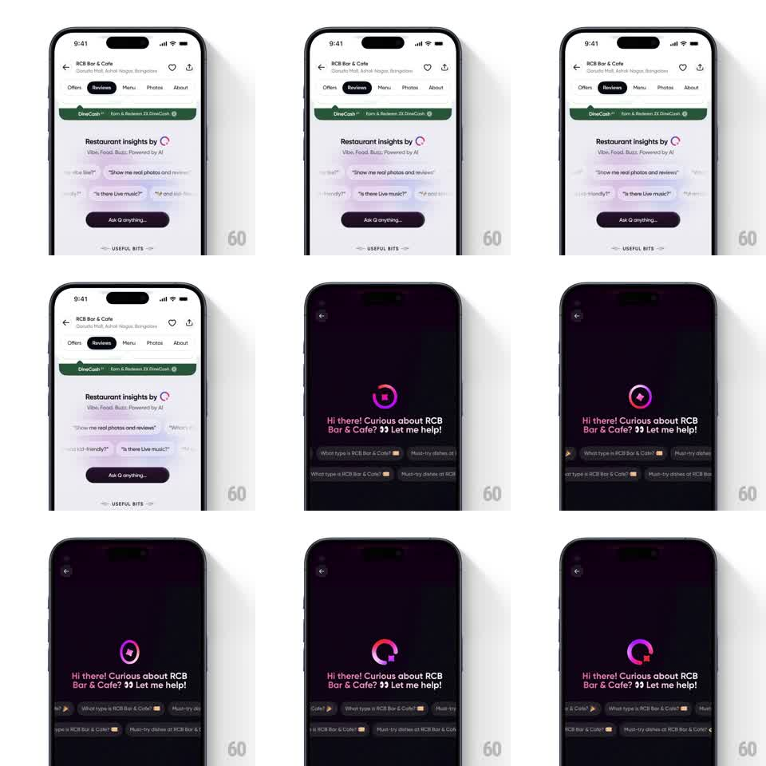

Media
Frame-by-frame

Rebuild this animation 1:1: Swiggy's Q AI assistant intro - the gradient Q ring spins and sparkles above the greeting while suggestion chips marquee along the bottom of the chat sheet.

Rebuild this animation 1:1: Swiggy's Q AI assistant intro - the gradient Q ring spins and sparkles above the greeting while suggestion chips marquee along the bottom of the chat sheet. ## Integration Integration: stack-agnostic spec - springs given as stiffness/damping, timed motions as duration + curve; map every value to your framework and animation library of choice. ## Scene Two surfaces: the restaurant Reviews tab with a "Restaurant insights by Q" card (suggestion bubbles, an "Ask Q anything..." pill) and the Q chat sheet itself - dark plum, back button top-left, the Q logo (a gradient ring with a notched tail) center above "Hi there! Curious about RCB Bar & Cafe? Let me help!" and two scrolling rows of suggestion chips at the bottom. ## Motion spec Pattern: gradient ring spinner with sparkle pops over a typing greeting. - The Q ring's gradient rotates continuously (one revolution 2.4s, linear) around the ring while the ring itself breathes (scale 1 -> 1.05 -> 1, 2.4s, phase-locked with the gradient). - A small four-point sparkle pops at the ring's notch every cycle (scale 0 -> 1 -> 0, 500ms, rotate 45 degrees), sometimes traveling a quarter-turn around the ring. - The greeting types in word by word (120ms per word, slight fade-up 6px each) with the eyes emoji popping last (spring ~400/14). - Suggestion chips marquee: two rows drift horizontally in opposite directions (24px/s), looping seamlessly; each chip is an outlined pill with a small sparkle icon. ## Calibration - The logo is the only saturated element - magenta-to-violet gradient on dark plum. - Ring rotation is constant speed; only the sparkle gives it rhythm. ## Reduced motion Ring holds static with gradient fixed; greeting fades in whole (250ms); chips static. ## Don't miss - The ring's tail notch rotates with the ring - it's a Q, not an O; the notch position is part of the mark. - The Reviews-tab card hints at the same motion: the Q glyph in "insights by Q" carries the gradient too.